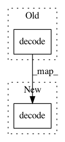

e70a1e3fddeb24c02ea56f74ff4ce33c8642ac0c,autokeras/utils.py,,get_device,#,47
Before Change
// Free : xxxxxx MiB
// ....
smi_out = subprocess.check_output("nvidia-smi -q -d Memory | grep -A4 GPU|grep Free", shell=True)
print(smi_out.decode("utf-8"))
except subprocess.SubprocessError:
warnings.warn("Cuda device successfully detected. However, nvidia-smi cannot be invoked")
return "cpu"
After Change
// ....
smi_out = subprocess.check_output("nvidia-smi -q -d Memory | grep -A4 GPU|grep Free", shell=True)
if isinstance(smi_out, bytes):
smi_out = smi_out.decode("utf-8")
print(smi_out)
except subprocess.SubprocessError:
warnings.warn("Cuda device successfully detected. However, nvidia-smi cannot be invoked")
return "cpu"
In pattern: SUPERPATTERN
Frequency: 3
Non-data size: 2
Instances
Project Name: keras-team/autokeras
Commit Name: e70a1e3fddeb24c02ea56f74ff4ce33c8642ac0c
Time: 2018-11-15
Author: jhfjhfj1@gmail.com
File Name: autokeras/utils.py
Class Name:
Method Name: get_device
Project Name: asyml/texar
Commit Name: 71097bcad4a95450ce3befd08396207a50fa8893
Time: 2018-03-16
Author: zhitinghu@gmail.com
File Name: texar/data/data_decoders.py
Class Name: TextDataDecoder
Method Name: __call__
Project Name: asyml/texar
Commit Name: de6d802b480f1504d060915dc520bef9223aac84
Time: 2018-03-21
Author: zhitinghu@gmail.com
File Name: texar/data/data_decoders.py
Class Name: ScalarDataDecoder
Method Name: __call__